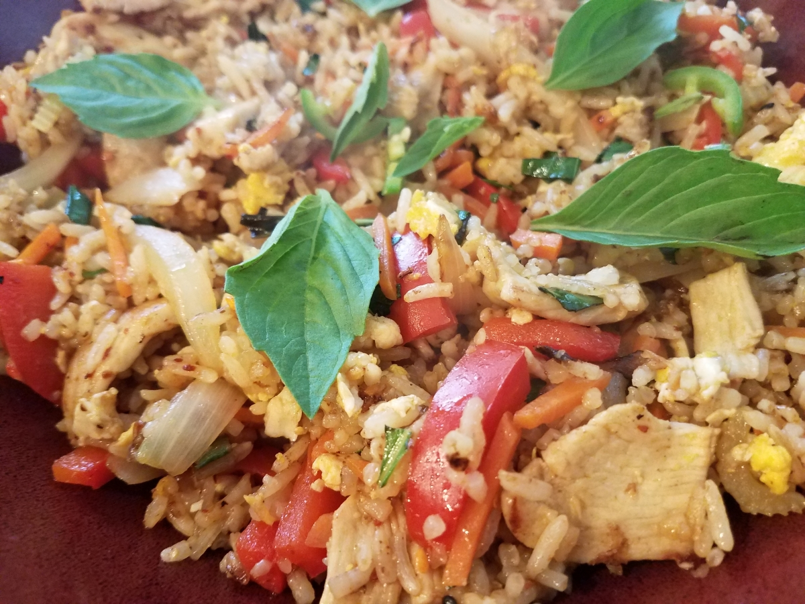

Chicken Fried Rice

Description
This Thai basil fried rice is a staple of Thai cooking and a great
use for leftover rice. Adjust the spices to your tastes. I get Thai
basil from a local Asian market. It has a different flavor than
regular basil and makes all the difference in this recipe. It is
fast and fairly easy to make but requires constant stirring.
Ingredients
- 3 tablespoons oyster sauce
- 2 tablespoons fish sauce
- 1 teaspoon white sugar
- 1/2 cup peanut oil for frying
- 6 large cloves garlic clove, crushed
- 2 serrano peppers, crushed
-
1 pound boneless, skinless chicken breast, cut into thin strips
- 1 red bell pepper, thinly sliced
- 1 onion, thinly sliced
- 4 cups cooked jasmine rice, chilled
- 2 cups sweet Thai basil
- 1 cucumber, sliced (optional)
- 1/2 cup cilantro sprigs (optional)/li>
Steps
-
Whisk together oyster sauce, fish sauce, and sugar in a small
bowl; set aside.
-
Heat oil in a wok over medium-high heat until oil begins to
smoke. Add garlic and serrano peppers, stirring quickly. Stir in
chicken, bell pepper, onion, and oyster sauce mixture; cook
until chicken is no longer pink in the center and the juices run
clear.
-
Increase heat to high and stir in chilled rice; stir quickly
until sauce is well blended with rice. Use the back of a spoon
to break up any rice sticking together.
-
Remove the wok from heat. Stir in basil leaves. Garnish with
sliced cucumber and cilantro.
Thai Spicy Basil Chicken Fried Rice
by
ErinInVegas
at
allrecipes.com